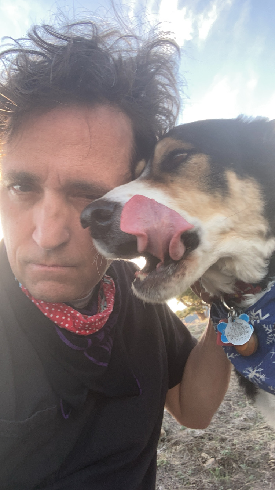
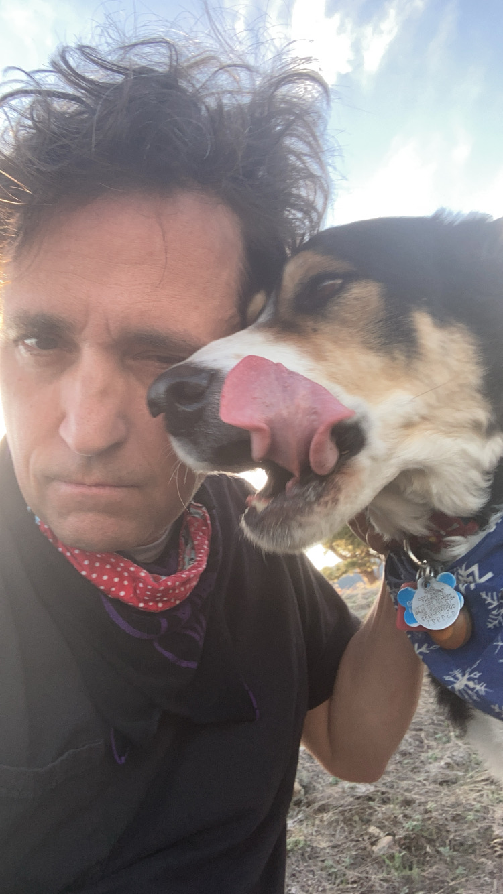

Obituary services provided by:
Composition by Carnes
About Us
At Composition by Carnes, Pete and Jim take pride in crafting obituaries specific to the needs of the client. We understand that you’re inundated with grief and the logistics of saying goodbye to a loved one, and we’re honored to help you have one less thing about which to worry. As retired English teachers with 12 years of obituary experience, we possess the skills necessary to write a quality summary of the departed’s life. In addition to traditional obituaries, we’re also delighted to honor the life of your beloved pet.
 

Our Process
The first step is to contact us via email (obitwriter66@gmail.com) or phone(303-809-9844).
Next, visit our website here and fill out the the Obituary Worksheet.
Provide all the factual information about the deceased. Submit the form.
Once we’ve read it, we’ll call you to get more personal information and begin the obituary..
Within a day or two, we’ll email you a rough draft, and you’ll have a chance to provide editing feedback.
Finally, we’ll finalize the piece and email it back to you and your funeral home for publication and/or a pamphlet for the memorial service.
Rates:
- 250 words or less...$200
- Over 250 words...$300
Payment:
- Mailed checks (1672 Eldorado Dr., Superior, CO 80027)
- Pay Online Here
Testimonial
Michael: I own and operate Murphy & Associates Funeral Directors. In 2012, Pete and I had known each other from years of playing golf, and I had also known his in-laws well for decades. Once he stopped teaching, I asked him if he’d ever written an obituary. He replied by knocking his first try out of the park: The family was elated. Since then, Pete has been our go-to obituary writer/editor, and the praise from families continues with each one he pens. His writings come through with every ounce of objective information necessary, as well as whatever emotional tone the family requests. Furthermore, due to the nature of the business, we often call on Pete to put together obituaries with a quickly approaching deadline, and he’s always happy and able to work on a tight schedule.